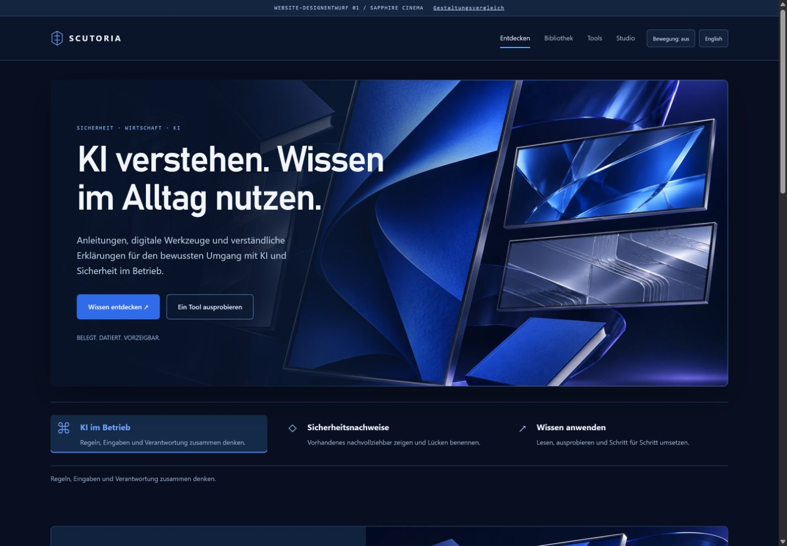
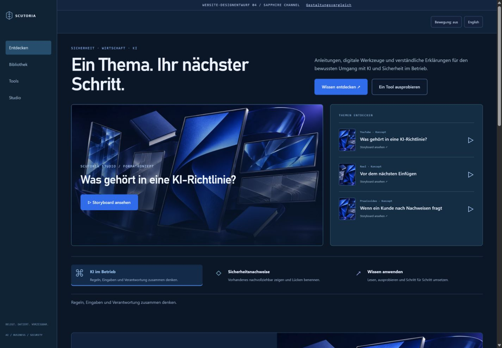

VARIANTE 01
Sapphire Cinema
Große Kinobühne mit Text im Bild. Die engste Weiterentwicklung von Studio Sapphire.
Gleiche filmische Bildwelt, unterschiedliche Kompositionen. Jeweils mit Bibliothek, Produktdetail, Tools und Studio.

Große Kinobühne mit Text im Bild. Die engste Weiterentwicklung von Studio Sapphire.

Ruhige geteilte Startseite, klare Typografie und stärkerer Fokus auf digitale Publikationen.

Zentrierte Botschaft über einer breiten Bildbühne. Großzügig und etwas offener innerhalb der dunklen Palette.

Ein Lernkanal mit seitlicher Navigation, Hauptformat und sichtbarer Themenliste.

Eine asymmetrische Kollektion mit breitem Filmrahmen und überlagerter vertikaler Medienkarte.